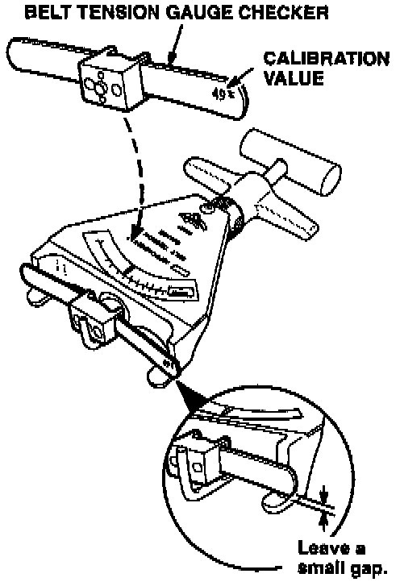
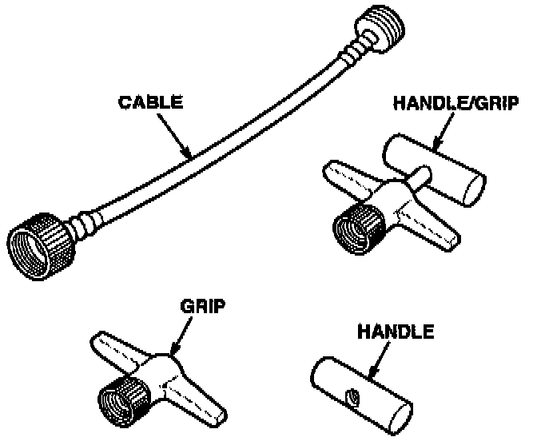

Belt Tension Gauge Calibration and Repair
February 20, 1996BULLETIN NO.
96-003
YEAR
ALL
MODEL
ALL
VIN APPLICATION
ALL
Belt Tension Gauge Calibration and Repair
Drive belt tension can be critical to the bearing life of the A/C compressor, alternator, etc. Tension should be checked and adjusted when a new belt is installed, and when a used belt is removed and reinstalled during a repair. For that reason, each Acura dealership is being sent a Belt Tension Gauge Set (T/N O7TGG-001000A). This set contains:
Belt tension gauge (T/N O7JGG-001010A)
Belt tension gauge extension cable
Belt tension gauge checker (T/N O7TGG-001010A)
Plastic pouch and instruction manual
Refer to the appropriate service manual for drive belt tension specifications and procedures.
CALIBRATION
The calibration of the belt tension gauge should be checked regularly. Use the Belt Tension Gauge Checker included in the Gauge Set. If needed, additional checkers may be ordered through normal parts ordering channels. The part number is O7TGG-001O10A.
PROCEDURE

1. Push the handle and slide the checker into the gauge. Position the checker as shown.
2. Release the handle and read the tension value on the Kg scale.
3. Compare your reading to the value etched on the checker. Your gauge is in calibration if it is within +/- 3 kg of the checker value.
If your belt tension gauge is out of calibration, you cannot recalibrate it yourself. Contact America Kowa Seiki about sending it for recalibration.
REPLACEMENT PARTS

If your belt tension gauge is damaged, replacement parts are available from America Kowa Seiki. They are:
Cable 95506-10040
Handle/Grip 95506-10021
Handle only 95506-20081
Grip only 95506-20310
REPAIR AND CALIBRATION INFORMATION
To order replacement parts for a gauge, contact:
America Kowa Seiki
20013 S. Rancho Way
Rancho Dominguez, CA 90220
(800) 824-9655
To return your belt tension gauge for calibration:
Contact America Kowa Seiki for authorization and shipping instructions.
^ Pack the belt tension gauge in a suitable box. Use "bubble pack" to protect the gauge.
^ Ship according to their instructions.
America Kowa Seiki will charge a fixed fee to inspect, clean and calibrate the belt tension gauge, and return it via UPS ground. Any repair parts needed are extra. The gauge will be returned within 15 days.